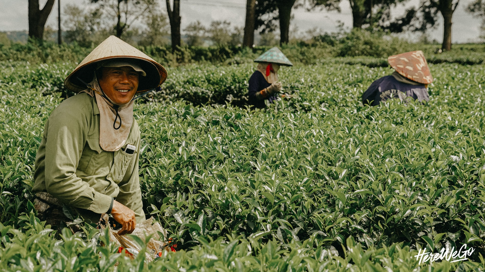

Tây Nguyên
Bạn biết gì khi nhắc đến Tây Nguyên? Một cao nguyên đầy nắng gió, mùi cafe thơm lẩn quất trong không khí, những già làng móm mém cười hiền từ ngồi bên hiên nhà rông hay tiếng cồng chiêng trầm ấm như một câu hát ngâm nga đưa ta lùi về quá khứ? Đó là những gì chúng tôi cảm nhận về Tây Nguyên trước khi đến nơi này. Rất ít. Dù chúng ta được đọc, được xem rất nhiều và có những ấn tượng nhất định về Tây Nguyên - nhưng thực ra mọi thứ lại rất chung chung và mơ hồ. Vậy nên, khi lá thăm mở ra và dòng chữ Tây Nguyên ngay ngắn xuất hiện, trái tim chúng tôi đập nhanh hơn một nhịp. Sự hồi hộp khi biết mình sắp khám phá một miền đất còn nhiều bí ẩn, sau đó là sự lo lắng len lỏi khi nhận ra: Cả lũ… mù tịt về du lịch Tây Nguyên.
Ngày Đầu Tiên:
Chúng tôi chọn chuyến bay của VietNam Airlines, từ Đà Nẵng tới sân bay Buôn Ma Thuột - xuất phát lúc 7h sáng. Tây Nguyên đón chúng tôi với không khí se se, trời nhiều nắng nhưng gió hanh hao, mát mẻ - trái ngược với suy nghĩ về một miền đất oi nóng trong tưởng tượng trước khi đến đây. Vì nhắc đến Tây Nguyên là nhắc đến cafe, thế nên chúng tôi nhất định tìm cho mình một quán "Buôn mê xịn" để thử mùi vị của thứ cafe trứ danh vùng cao nguyên. May mắn là, quán cafe chúng tôi đến không chỉ có cafe ngon, mà còn là một nơi để chúng tôi được nghe và hiểu hơn về văn hoá của người Ê đê. Quán có tên Arul, cũng là tên của chị chủ quán. Một người phụ nữ Ê đê đáng mến dựng lên quán với mong muốn giới thiệu văn hoá của người dân tộc mình tới các khách du lịch.
Đón chúng tôi bằng sự niềm nở, chị kể về ngôi nhà của người Ê đê, về hai chiếc cầu thang trước cửa nhà - một tượng trưng mẹ, một tượng trưng cho cha. Chị kể rất nhiều điều về văn hoá, về cuộc sống của người Ê đê, mà chúng tôi khuyên rằng nhất định bạn phải tới một đây một lần và lắng nghe qua chất giọng trầm ấm ấy - bạn mới có thể cảm nhận được màu sắc văn hoá Tây Nguyên qua một lăng kính gần gũi hơn rất nhiều. Buổi chiều, chúng tôi được một người bạn khuyên hãy ghé thăm hồ Lak, thay vì chọn một vài điểm du lịch nổi tiếng và được khai thác triệt để rồi. Ngay cả trên đường đi, chúng tôi cũng đã kịp dừng lại ở một cánh đồng rộng lớn và bất ngờ trước một màu xanh trải dài bình yên tít tầm mắt.
Chúng tôi đến Gia Lai trong đêm, khi mà lòng vẫn còn vấn vương Buôn Mê Thuột với thác Draynur và điệu cồng chiêng trầm ấm của người Ê Đê. Du lịch Tây Nguyên: Dừng chân lại lắng nghe hơi thở Tây Nguyên  Ngày đầu tiên ở Gia Lai, chúng tôi chọn ghé thăm Hồ T'nưng hay còn gọi là Biển Hồ. Đây là một hồ nước ngọt nằm ở phía Tây Bắc thành phố Pleiku, tỉnh Gia Lai. Nơi này nằm trên cao nguyên địa hình bằng phẳng, cao khoảng 500 m so với mực nước biển. Đây vốn là miệng núi lửa khổng lồ, quanh năm đầy nước và luôn xanh ngắt, bởi vậy nên Biển Hồ cũng được coi là viên ngọc của Tây Nguyên. Nằm trên bờ bắc Biển Hồ, cách thành phố Pleiku, Gia Lai khoảng 13km, những đồi chè được hình thành từ khi người Pháp ở đây khoảng năm 20 thế kỉ trước. Chúng tôi đã ghé qua nơi này và buổi trưa, dạo khắp các đồi chè để chụp ảnh và ngắm nhìn, trò chuyện với những người nông dân ở đây. Lang thang giữa những đồi chè bạt ngàn, xanh mướt trong ánh nắng vàng ruộm của cao nguyên - thật sự là một buổi chiều đẹp, bình yên và đáng nhớ, mà có lẽ tôi sẽ chẳng bao giờ quên được dù có du hành đến những miền đất xa xôi và kỳ vĩ nào đi chăng nữa.
Cảm ơn Tây Nguyên đã rộng vòng tay đón chúng tôi vào lòng, để chúng tôi được đắm mình trong sự hoang sơ và hùng vĩ của cao nguyên đất đỏ, để được chu du qua những màu sắc văn hoá nồng ấm của xứ cồng chiêng, và để thấy mình còn nhỏ bé biết nhường nào trước sự rộng lớn, đẹp đã và khôn cùng của đất nước Việt Nam mình. Tất cả những vẻ đẹp kỳ vĩ này, những dấu ấn văn hoá độc đáo này, sẽ mãi tồn tại - nếu trái tim chúng ta dành một sự quan tâm và trân trọng chân thành. Hãy ghé thăm Tây Nguyên, để không chỉ mở mang tầm mắt, mà còn để những tiếng hát trong đêm lửa trại, tiếng cồng chiêng của các vị gìa làng có thêm dịp được cất lên và vang mãi về sau.
Tất cả những vẻ đẹp kỳ vĩ này, những dấu ấn văn hóa độc đáo này, sẽ mãi tồn tại- nếu trái tim chúng ta dành một sự quan tâm và trân trọng chân thành. Hãy ghé thăm Tây Nguyên, để không chỉ mở mang tầm mắt, mà còn để những tiếng hát trong đêm lửa trại, những tiếng cồng chiêng của các vị già làng có thêm dịp được cất lên và vang mãi về sau.